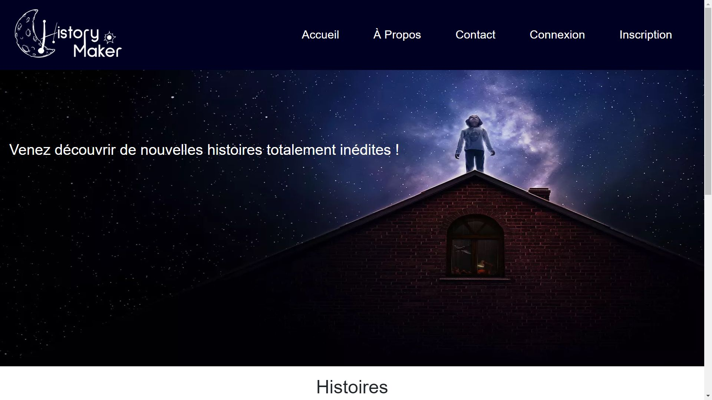
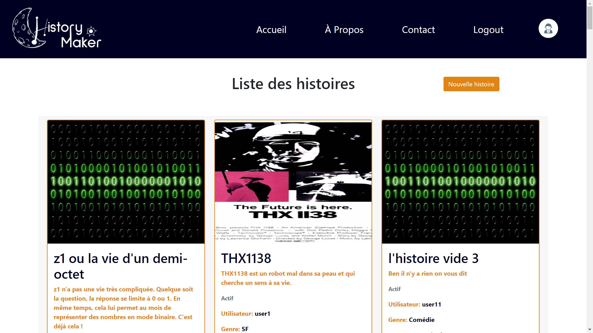

History Maker
Dans le cadre du marathon Web, nous avons formé une équipe de 4 informatiques et 4 MMI, en est sorti HistoryMaker, un site internet pour lire mais aussi créer des histoires dont vous êtes le héro !
Le but du marathon web était en 48h de créer de zéro un site internet sur un thème donné.
La charge de travail était intense mais nous n'avons rien laché et nous avons fini d'implémenter toutes les fonctionnalités de base.
Sur History Maker vous avez la possibilité de :
- Lire des histoires (triées ou non par choix de l'utilisateur)
- Créer notre propre histoire
- Créer un compte ou se connecter
- Visiter le profil des utilisateurs
- Mettre en favoris des histoires
Alors n'attendez plus et aller lire une histoire le soir avant d'aller dormir !

(Page d'accueil du site)

(Page de profil d'un utilisateur)

(Page listant des histoires)

(Photo de l'équipe)